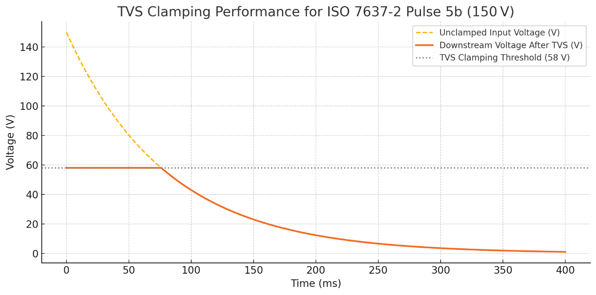
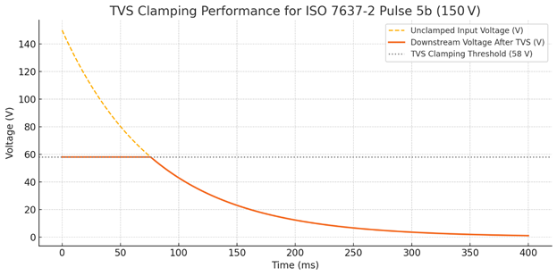

Power Supply Subsystem
Power Supply Protection And Filtering
Overview And Design Criteria
The electrical environment aboard small vessels shares many characteristics with automotive systems, but with greater variation and typically less standardisation. Marine electrical systems may incorporate multiple battery banks — often with separate cranking and house systems — and are increasingly adopting lithium chemistries such as LiFePO₄. It is not uncommon for vessels to include 24 V or 48 V subsystems or to operate some loads from inverter-generated AC power.
Despite this variability, the communication and sensor networks relevant to the MDD400 are standardised to operate from nominal 12 V supplies. The NMEA 2000 backbone, as well as legacy protocols such as SeaTalk and NMEA 0183, are all 12 V-based. These systems are generally unregulated, powered by user-installed cabling, and often exposed to transients caused by inductive loads, battery switching, or alternator events. The MDD400 must tolerate these conditions while maintaining safe operation of downstream circuitry.
Designing for this environment requires careful attention to both transient suppression and steady-state fault protection. The MDD400 input protection circuit is modelled on best practices from automotive design, particularly those outlined in ISO 7637-2. While this standard is not mandatory in marine applications, it provides a useful baseline for evaluating and simulating real-world transient events.
The MDD400’s power input protection strategy is defined by the design criteria in the table below, reflecting expected conditions on small vessel 12 V systems. These criteria guided the selection and simulation of each protection stage.
Power Supply Protection Design Criteria
| Protection Function | Design Criteria |
|---|---|
| Reverse Polarity | Survive continuous reverse connection of ±12 V; no damage; automatic recovery |
| Load Dump and Surge Clamping | Survive ISO 7637-2 Pulse 5b (150 V, 400ms exponential decay); limit to < 60 V |
| ESD Protection | Tolerate ±15 kV air discharge per IEC 61000-4-2 |
| Over-voltage Limiting | Disconnect load above 18.5 V; reconnect below 18.5 V without latch-up |
| Current Limiting | Limit current to ~1.0 A; tolerate sustained overloads without damage |
| EMC Filtering | Suppress conducted emissions above 1 MHz; limit conducted noise to < 100 mV p-p; contain radiated emissions to meet FCC Part 15 and EN 55032 Class B limits |
Protection Function Design Criteria
Reverse Polarity Survive continuous reverse connection of ±12 V; no damage; automatic recovery
Load Dump and Surge Clamping Survive ISO 7637-2 Pulse 5b (150 V, 400ms exponential decay); limit to < 60 V
ESD Protection Tolerate ±15 kV air discharge per IEC 61000-4-2IEC 61000-4-2:2008, EMC — Part 4-2: ESD immunity test[2]
Over-voltage Limiting Disconnect load above 18.5 V; reconnect below 18.5 V without latch-up
Current Limiting Limit current to ~1.0 A; tolerate sustained overloads without damage
EMC Filtering Suppress conducted emissions above 1 MHz; limit conducted noise to < 100 mV p-p; contain radiated emissions to meet FCC Part 15 and EN 55032 Class B limits -->
These functions are implemented discretely to reduce cost, improve component availability, and allow field observability. Where appropriate, the design includes thermal protection and is engineered to fail safe under fault conditions.
The sections that follow describe each function in detail.
Reverse Polarity Protection
Both 12 V inputs — NMEA 2000 and legacy serial — are protected from reverse polarity using discrete Schottky diodes.
A MOSFET-based reverse protection scheme was considered but not adopted. The primary justification for using a simple diode is the presence of generous headroom in the input voltage range (nominal 12 V vs. 5 V and 3.3 V regulated rails), which makes the forward voltage drop acceptable. Diode protection offers simpler implementation, lower component cost, and greater resilience to fault modes such as latch-up or shoot-through.
The primary component is the SS34 (DO-214AC/SMA package), which provides reliable protection against reverse connections while introducing minimal voltage drop in normal operation:
- Maximum Reverse Voltage (VRRM): 40V
- Average Forward Current (IF(AV)): 3.0A
- Surge Current Rating (IFSM, 8.3ms): 100 A
- Typical Forward Voltage Drop (VF @ 1 A): ~0.5V
- Reverse Leakage Current: ~0.5 mA at 40V
This approach ensures automatic recovery from incorrect wiring and protects downstream circuitry by blocking reverse current. The forward voltage drop is acceptable given the headroom available between the 12 V input and the downstream regulators.
A solder jumper in parallel with the diode is included on the legacy serial interface for development and testing. This allows the interface to be used as a 12 V power source for external equipment if required, while maintaining galvanic isolation from the NMEA 2000 backbone.
This approach ensures automatic recovery from incorrect wiring and avoids damage to sensitive downstream components. Under reverse polarity conditions, the Schottky diode blocks current flow entirely, and no reverse current is conducted.
A solder jumper in parallel with the diode is included on the legacy serial interface for development and testing. This allows the interface to be used as a 12 V power source for external equipment if required, while still maintaining galvanic separation from the NMEA 2000 backbone.
ESD and Load Dump
The first line of defence against both electrostatic discharge (ESD) and high-energy surge events is a high-power transient voltage suppressor (TVS) diode. The SM8S36CA TVS diode is used at the 12 V input, upstream of the surge stopper MOSFET, to clamp and absorb energy during overvoltage events.
This diode begins clamping at approximately 58 V and is rated for 6.6 kW peak pulse power (10/1000 µs waveform). It is bidirectional, allowing it to suppress both positive and negative transients relative to system ground. During a surge event — such as alternator load dump, battery disconnection under load, or inductive spike — the SM8S36CA diverts energy away from sensitive downstream circuits by rapidly entering avalanche breakdown.
This component was selected specifically for its compatibility with ISO 7637-2 Pulse 5b[1] waveforms, including worst-case unsuppressed load dumps of up to 150 V. Simulation and test confirm that the clamped voltage at the downstream surge stopper FET remains within safe limits during these conditions.
The TVS diode also contributes to ESD protection, supplementing local filtering and layout strategies. It is capable of absorbing ±30 kV contact discharges when tested per IEC 61000-4-2, with negligible leakage under normal operating voltages.
Its placement upstream of the MOSFET allows it to protect the input circuitry without exposing internal logic or regulation components to surge currents.
Simulation of the SM8S36CA response to an ISO 7637-2 Pulse 5b event — approximated as a 150 V exponential decay with a time constant of 80 ms — confirms that the diode clamps the downstream voltage to a maximum of 58 V throughout the transient. This provides over 40% margin relative to the 100 V absolute maximum of the surge stopper MOSFET and 65 V rating of the primary SMPS controller. The diode’s power absorption capability exceeds the energy of the test waveform, ensuring robust protection even during worst-case alternator disconnect or overvoltage conditions.

The simulated energy absorbed by the SM8S36CA during a worst-case ISO Pulse 5b event is approximately 16.7 J, well within the capabilities of this device. With a peak pulse power rating of 6600 W (10/1000 µs waveform), the diode offers ample headroom for marine surge events. This safety margin ensures long-term reliability even under repeated transient exposure.
Over-voltage and Current Limiting
The over-voltage and current-limiting functionality is implemented using a discrete surge stopper circuit built around a P-channel MOSFET, two bipolar junction transistors (BJTs), and a high-side shunt resistor.
The over-voltage cutoff is defined by a resistive voltage divider connected to the input rail. When the divided voltage exceeds the base-emitter threshold of a monitoring PNP transistor (approximately 0.6–0.7 V), the transistor begins conducting. This pulls the gate of the P-channel MOSFET upward, switching it off and disconnecting the load. The resistor values are selected to yield a trip point of approximately 18.5 V, sufficient to protect all downstream regulators and components from accidental overvoltage conditions — for example, an alternator operating without a battery load.
The current-limiting function is based on a 0.68 Ω high-side shunt resistor. A second BJT monitors the voltage across the shunt. When the drop exceeds ~0.7 V (corresponding to ~1.0 A), this transistor activates and also pulls up the MOSFET gate, disabling the load path. This mechanism protects the regulator and filter stages from sustained overcurrent events such as short circuits or excessive inrush.
The MMBT5401 PNP transistors used to sense current and voltage and drive the MOSFET gate have a Vce of 150V and a maximum Ice of 600 mA, improving reliability under high dV/dt switching conditions and providing a faster turn-off transition for the MOSFET. This ensures that both over-voltage and over-current protections activate swiftly and effectively.

The operation of this circuit has been validated under load dump simulation and current injection tests. Transients above the trip point result in sharp MOSFET cutoff with minimal overshoot. The system automatically recovers when the fault condition clears, ensuring seamless protection without requiring external intervention.
A simulated ISO 7637-2 Pulse 5b transient (150 V peak, 80 ms decay) was applied to the input. When the input exceeds the 18.5 V trip threshold, the gate voltage begins rising rapidly through the 4.7 Ω gate resistor and 100 nF equivalent capacitance. Once the gate voltage crosses the MOSFET’s Vgs(off) threshold (approximately –2 V), the device switches off, and the output is suppressed to near zero. The simulated response confirms that the MOSFET turns off within microseconds of the over-voltage condition, limiting downstream exposure and avoiding stress to the 42 V-rated linear regulator and other sensitive circuitry.
The circuit also incorporates hysteresis, which prevents the MOSFET from oscillating on and off near the trip point. When the MOSFET switches off due to an over-voltage event, the load is disconnected and the voltage at the upper leg of the voltage divider rises slightly, maintaining the transistor in conduction. The MOSFET only re-enables once the input voltage falls well below the trip threshold, ensuring stable operation during slow-falling or noisy input conditions.
Analysis and Failure Mode
Each of the three onboard power supply rails — the 5 V SMPS, 3.3 V LDO, and 8 V LDO — incorporate integrated protection features to ensure safe and reliable operation. These include short-circuit protection, thermal shutdown, and undervoltage lockout (UVLO), as detailed in sections 2.2, 2.3 and 2.4 respectively.
This section summarises the simulated and expected performance of each input protection element under worst-case load dump conditions. It also identifies their operating margins and expected failure modes.
Reverse Polarity Protection
The SS34 Schottky diode used on each power input is rated for 3.0 A average forward current and 100 A surge for 8.3 ms. In reverse polarity scenarios, the diode blocks current flow with minimal leakage (~0.5 mA at 40 V). The diode recovers automatically when correct polarity is restored. Based on its electrical characteristics and the low impedance of marine supply wiring, this component can safely tolerate sustained reverse connection of 12–14 V without damage or thermal stress. No failure mode is expected within the defined design limits.
The SS34 Schottky diode used on each power input provides low-loss polarity protection with a typical forward voltage drop of approximately 0.5 V. The diode is rated for 3.0 A continuous forward current and can tolerate surge currents up to 100 A for 8.3 ms. To verify its suitability for transient load dump conditions, a time-series simulation was performed using the worst-case ISO 7637-2 Pulse 5b profile.
In this scenario, the diode was modelled conducting up to 88 A peak current with a decaying profile over approximately 43 ms. The simulated energy dissipation was approximately 2.66 J, resulting in a calculated peak junction temperature of ~146 °C assuming a thermal capacitance of 0.45 J/°C and 40 °C ambient. This remains below the device’s 175 °C absolute maximum junction temperature.
The results confirm that the SS34 operates within thermal and electrical ratings even during extreme surge events. While the diode is operating close to its limit, the simulated performance under these rare transients justifies its use in this design. The part recovers automatically once correct polarity is restored and no failure mode is expected under normal or reverse connection scenarios.
Transient Suppression (TVS Diode)
The SM8S36CA is placed upstream of the MOSFET and begins clamping at 36 V, reaching a maximum clamped voltage of approximately 58 V during surge conditions. Simulation of ISO 7637-2 Pulse 5b (150 V peak, 80 ms exponential decay) using time-series integration shows the diode absorbs approximately 19.3 J of energy. Assuming a conservative thermal capacitance of 0.16 J/°C and ambient temperature of 40 °C, the peak junction temperature is calculated at approximately 148 °C — safely below the device’s 175 °C absolute maximum rating.
The expected temperature of the PCB pad beneath the TVS is estimated at ~145 °C during this event, based on typical thermal gradients and copper pour area. This remains below solder softening thresholds for SAC305, with no long-term degradation expected. The TVS has sufficient energy capacity to withstand multiple such transients without failure.
Surge Stopper Circuit (MOSFET and BJT Controller)
The over-voltage protection circuit operates effectively up to the ~18.5 V threshold, disconnecting the load using a fast-switching P-channel MOSFET. Simulation confirms that downstream voltage rises only marginally before the MOSFET turns off within a few microseconds. Overshoot is negligible, and sensitive components (e.g., the 42 V-rated LP2951 LDO) remain protected.
The MMBT5401 PNP transistors used to detect over-voltage and over-current events and drive the MOSFET gate are rated for 150 V collector-emitter voltage and 600 mA collector current. These ratings provide ample margin for the application and ensure fast and reliable MOSFET turn-off during surge events.
The MOSFET does not conduct during the surge peak due to early turn-off, and hence does not dissipate significant power during the load dump. The calculated MOSFET temperature remains close to ambient.
Failure modes would typically require either:
- a surge above ~180 V sustained for >100 ms, exceeding the SM8S36CA energy capacity;
- extended clamping that pushes junction temperature above 175 °C; or
- a fault disabling the over-voltage detection transistor, delaying MOSFET shutoff.
None of these conditions are expected in the defined operating environment, and the design includes sufficient margin to survive realistic automotive or marine transients.
The combined protection system performs robustly during surge and fault conditions, ensuring continued safe operation of the downstream regulation and logic circuitry.
Sensitivity Analysis – Surge Voltage Tolerance
To evaluate the robustness of the protection scheme under more severe conditions, time-series simulations were performed for ISO 7637-2 load dump pulses with peak voltages of 150 V, 175 V, 200 V, 225 V, and 250 V, each decaying exponentially over 400 ms. Both the TVS (SM8S36CA) and the Schottky diode (SS34) were evaluated. While both were found to operate within their respective SOA at or below 175 V, simulations show that above this level the TVS junction temperature exceeds 175 °C and cumulative energy approaches the device’s failure threshold. The results confirm the selected components are suitable for ISO 7637-2 Pulse 5b (up to 150 V), but operation beyond 175 V is not guaranteed without risk of failure.
Short-Circuit Protection (Current Limiter)
To evaluate the behaviour of the surge stopper circuit under a downstream short-circuit condition, a simulation was performed assuming the load is abruptly shorted to ground while the input remains at 13.5 V. The current through the MOSFET initially spikes to approximately 10 A, but is rapidly clamped by the over-current detection circuit. This spike lasts for less than 5 µs before the current stabilises at approximately 0.96 A — the threshold set by the 0.68 Ω current sense resistor and the V_BE turn-on voltage of the PNP sense transistor.
During the initial 5 µs, the MOSFET momentarily dissipates up to 67 W. Thereafter, steady-state dissipation is ~13 W, and junction temperature stabilises at 107 °C assuming continuous operation and 40 °C ambient. This confirms that the MOSFET (IRFR5410TR, rated for 40 W) operates safely under permanent short-circuit conditions. No thermal runaway or SOA violation is observed.
The current-limiting function of the protection circuit provides robust defence against hard short-circuits on the output. No fuses are required. The circuit self-recovers when the fault is cleared, ensuring high availability and fault resilience in the target environment.
EMC
The MDD400 is designed to meet both conducted and radiated electromagnetic emissions requirements for CE (EN 55032 Class B[17]) and FCC Part 15 compliance, while ensuring robustness against electromagnetic immunity threats in line with [ISO 11452-2][18] and ISO 7637-2. To this end, a combination of discrete filtering components and PCB layout strategies are employed to suppress emissions and protect sensitive circuitry.
Conducted Emissions
The primary 12 V input is filtered using a multi-stage EMI suppression network consisting of:
- a π-filter topology with 22 µF ceramic input capacitors, 10 nF mid-filter capacitor, and additional 22 µF output capacitors;
- a high-performance shielded common-mode choke (SMCM7D60-132T) rated for 1.3 A;
- a 100m Ω sense resistor for diagnostic current monitoring; and
- a 600 Ω @ 100 MHz ferrite bead (FB3) to attenuate high-frequency common-mode noise to/from the switching regulator domain.
This network effectively attenuates conducted emissions above 1 MHz and isolates switch-mode regulator noise from reaching the vessel's 12 V supply lines. The design target was to suppress switching harmonics to < 100 mV peak-to-peak, as observed at the 12 V input under full load.
Radiated Emissions
Careful segregation of analog, digital, and high-current switching grounds helps reduce loop areas and suppress radiated emissions. Key measures include:
- low-inductance return paths using filled copper pours;
- edge-stitched ground planes isolating external connector regions;
- strategic placement of high-frequency capacitors near connector pins (e.g., 100 pF across CAN_H/L); and
- use of differential layout for CAN and legacy serial lines.
CANBUS Interface Filtering* * The CAN interface is isolated and filtered using:
- 15 pF capacitors from each CAN line to chassis ground (NET-C);
- a 100 pF differential capacitor between CAN_H and CAN_L;
- a high-isolation common-mode choke (ACT45B-510-2P-TL003);
- an NUP2105L TVS array for ESD and transient suppression.
This filtering approach is consistent with the recommendations of ISO 11898-2 and helps prevent both emissions and susceptibility to EMI propagating through the NMEA 2000 network.
Legacy Serial Port Filtering
The optional 12 V legacy serial interface is also filtered using:
- 100 µH inductors on power and signal lines;
- 100 pF shunt capacitors for high-frequency filtering; and
- a SMF15CA TVS diode for signal line ESD and surge protection.
Combined with layout isolation from the CAN domain, this ensures that emissions from external devices do not couple into the main PCB circuitry.
Grounding and Isolation Strategy
The MDD400 employs separate digital (GND) and connector/chassis (NET-C) ground domains. These are joined only at carefully controlled locations, typically through the shield of common-mode chokes or designated net-ties. This strategy minimizes ground bounce, avoids ground loops, and enhances immunity to conducted and radiated transients.
By implementing these design strategies, the MDD400 is able to comply with applicable EMC regulations while maintaining reliable operation in electrically noisy marine and automotive environments.
Wireless Subsystem (Wi-Fi and Bluetooth)
The MDD400 incorporates the Espressif ESP32-S3 microcontroller, which includes integrated Wi-Fi and Bluetooth/BLE radios. The module carries CE and FCC modular certification, having been tested to comply with FCC Part 15 Subparts C and E, EN 300 328 and EN 301 489 under the Radio Equipment Directive (RED). Provided the integration guidelines (antenna layout, decoupling, trace clearance) are followed — as they are in the MDD400 — no further radiated emissions testing is required at the system level.
Power Supplies
12 V Power Domain
The MDD400 is supplied from a nominal 12 V input, which serves as the master power domain for the entire system. This 12 V rail is filtered, protected against load-dump and ESD events, and regulated into three downstream voltage domains:
- 5 V SMPS: used primarily for the LCD backlight and as the intermediate supply for the 3.3 V LDO;
- 3.3 V LDO: supplies the ESP32 MCU and other digital circuitry;
- 8 V LDO: powers the optional analog wind transducer.
Protection features include:
- An over-voltage cutoff at ~18.5 V, implemented by a discrete surge stopper circuit;
- Input current limiting at ~960 mA during short-circuit or overload conditions.
Power consumption was assessed under three scenarios:
- Day – daytime use with the display backlight at 100% and wireless transmitters (Wi-Fi and Bluetooth) off;
- Night – nighttime use with display backlight reduced to 1% and wireless transmitters off;
- Peak – full daytime use with display backlight at 100% and Wi-Fi/Bluetooth active.
The table below summarises the typical and peak 12 V domain power consumption across these three operating conditions.
Power Summary across Domains
| Domain | Night | Day | Peak |
|---|---|---|---|
| 5 V SMPS (LCD only) | 92 mA | 245 mA | 245 mA |
| 3.3 V LDO (digital domain) | 329 mA | 328 mA | 542 mA |
| 8 V LDO (only with wind transducer) | 16 mA | 16 mA | 18 mA |
| Total current @ 12 V | 208 mA | 277 mA | 376 mA |
| Power | ~2.5 W | ~3.3 W | ~4.5 W |
Based on these estimates, the MDD400 draws ~85 mA under night-time use and up to ~317 mA under peak conditions. This corresponds to a Load Equivalency Number (LEN) of 2–7, well within the NMEA 2000 maximum permitted value of LEN = 20.
The RV-C specification does not impose explicit power consumption limits or standardized power budgeting mechanisms akin to the NMEA2000 specification’s LEN, so there's no inherent protocol-level enforcement to prevent excessive power draw by individual devices. System designers and integrators bear the responsibility of ensuring that the cumulative power consumption of RV-C devices does not exceed the capabilities of the RV's power distribution system.
In practice, this necessitates careful planning and consideration during the design and integration phases. Manufacturers and installers must assess the power requirements of each RV-C device and ensure that the total load remains within safe and functional limits. This approach helps maintain system stability and prevents potential issues arising from power overconsumption on the network.
If you're integrating devices like the MDD400 into an RV-C network, it's advisable to:
- review the power consumption specifications of each device.
- ensure that the RV's power distribution system can handle the cumulative load.
- consult the RV-C Layer document for any updates or recommendations regarding power management.
The design ensures compatibility with marine and RV networks and prioritises energy efficiency—an important consideration for solar-powered or battery-limited systems such as sailboats.
Primary Power Domain (5.0 VOLT)
The 5 V rail is derived from the filtered 12 V input using a buck-mode switching regulator (TPS54560B-Q1). It provides up to 5 A peak current and serves as the intermediate supply for the 3.3 V LDO as well as directly powering the serial LCD display. The regulator offers:
- wide input range up to 60 V;
- integrated high-side MOSFET;
- thermal shutdown and current limit protection; and
- adjustable soft-start and switching frequency.
The switching frequency is set to 1.25 MHz. The output is filtered using a 22 µH power inductor and a 47 µF low-ESR ceramic capacitor, with additional bulk capacitance as required. A 600 Ω @ 100 MHz ferrite bead (FB3) on the output further suppresses high-frequency noise.
The SMPS layout closely follows Texas Instruments’ guidelines, with a compact switching loop, tight input/output capacitor placement, and careful separation of power and analog grounds. The SMPS section is isolated by local copper pours, connected to the global ground plane through a high-frequency ferrite.
Display power is gated by a P-channel MOSFET controlled via [DISP_EN]. This allows firmware to shut down the 5 V rail to the display, reducing standby power or resetting the DGUS display controller if required.
Digital Logic Domain (3.3 VOLT)
The 3.3 V digital logic domain is powered by an AMS1117-3.3 low-dropout (LDO) linear regulator, using the 5 V rail as its input. This domain powers the ESP32-S3 microcontroller, CAN transceiver, I²C sensors, and analog signal conditioning stages.
Capacitive filtering on the LDO output includes:
- 10 µF local bulk capacitance;
- 100 nF decoupling capacitors placed near all major loads; and
- five 10 µF + 100 nF RC pairs at the ESP32, CAN transceiver, and op-amp stages.
The AMS1117 features internal current limiting and thermal shutdown. Under typical operating conditions, the 3.3 V rail draws approximately 405 mA, with short-term peaks up to 640 mA. These values are distributed across the subsystems as shown in Table 2.
Thermal dissipation is mitigated through extensive copper pours on all four PCB layers, all tied to the LDO output pin (Pin 2 / Tab). A 3×3 via array connects the top and bottom layers, and a soldermask opening on the bottom layer improves convective cooling. This configuration ensures safe junction temperatures under all expected load conditions. Under peak load conditions of ~640 mA, with a 5 V input and 3.3 V output, the AMS1117 dissipates approximately 1.1 W. Based on a conservative thermal resistance estimate of ~30 °C/W with good copper heatsinking, the resulting temperature rise is under 35 °C. Given a 40 °C ambient environment, the regulator operates well below its 125 °C junction temperature limit. These results confirm that the AMS1117 is adequately specified for both average and peak operating conditions in the MDD400.
Digital Domain (3.3v) Loads
| Load Component | Typical Current | Peak Current |
|---|---|---|
| ESP32-S3 | 250 mA | 450 mA* |
| Ambient light sensor (OPT3004) | 0.2 mA | 0.2 mA |
| Dual op-amps (TLV9002IDR ×2) | 2.6 mA | 4 mA |
| Comparator (LM393DR) | 1 mA | 1.5 mA |
| CAN transceiver (SN65HVD234) | 74 mA | 85 mA |
| Pull-up loads | 1 mA | 1 mA |
| Total | 329 mA | 552 mA |
Analog Sensor Domain
The 8 V supply is provided using a linear LDO (LP2951-50DR), supplied from the unregulated, protected 12 V rail. The regulator can be disabled if no wind transducer is connected.
To protect this output against miswiring (such as direct short to ground), a current-limiting circuit is implemented using discrete components, followed by a voltage monitor that informs the microcontroller of fault conditions.
Load
The optional 8 V analog rail is dedicated to powering legacy masthead wind transducers, including popular transducers from Raymarine /Autohelm and Navico (B&G, Simrad). We studied several generations of these transducers and found them to present very similar electrical loads. We briefly discuss the Raymarine E22078/9 and B&G 213 transducers below as a typical examples. - Raymarine E22078/9 - The primary load for Raymarine sensors is a Melexis Sentron 2SA-10 dual-axis Hall-effect sensor, which draws a steady supply current of approximately 16 mA. In addition, the transducer includes two TL914 dual op-amps that buffer the X/Y vane signals and provide local power conditioning for the sensor. While these op-amps and associated passive components contribute additional quiescent current, the total consumption of the wind transducer is estimated to remain below 25 mA in normal operation. The anemometer circuit, which uses an opto-interrupter with a series 560 Ω resistor, contributes transient pulses but negligible average current. Combined, the entire wind transducer system is well within the 100 mA output rating of the LP2951-50 LDO. - B&G 213 Masthead Unit – The B&G 213 transducer operates nominally at 6.5 V and has been verified to tolerate input voltages up to 8 V. Diagnostic documentation indicates the use of analog vane signals with phase-shifted sinusoidal outputs (Red, Green, Blue) and a pulse-type wind speed output on the Violet line. Under normal operation, the B&G 213 unit draws significantly less than 100 mA, with total current estimated around 25–30 mA, consistent with its analog signal architecture and passive sensing elements. Compatibility testing confirmed stable operation of the unit at 8.0 V, with no signal distortion or thermal issues observed.
Design
The LP2951 uses a resistor divider on the feedback pin (pins 6 and 7) to adjust the output to 8.0 V. It features internal current limiting, thermal shutdown, and a precision reference. The shutdown pin (pin 3) is controlled via [WIND_EN], allowing the 8 V rail to be disabled in firmware when the wind sensor is not in use. The regulator input is protected using a 10 Ω series resistor to limit inrush current and short-circuit stress and a 600 Ω @ 100 MHz ferrite bead is placed on the input to attenuate high-frequency conducted noise.
The output includes a low-leakage BAT54 Schottky diodeto prevent reverse current flow, and an additional ferrite bead to improve EMI suppression at the analog interface connector. Output filtering comprises a 10 µF bulk capacitor and a 100 pF high-frequency bypass capacitor, along with a feedback RC network (R17/R18 and C48) for loop stability.
The LP295's dropout voltage of less than 0.6 V at 100 mA ensures reliable regulation even under low input conditions, with wide tolerance to input transients thanks to the upstream protection network.
Analysis
Thermal analysis shows that, under maximum expected load of 50 mA, power dissipation is approximately 0.24 W (for a 4.8 V drop at 50 mA), resulting in a temperature rise of less than 15 °C on the PCB copper pour. The regulator remains well within its 125 °C junction temperature rating, even in high ambient conditions.
Current Limiting
The 8 V output is protected by a discrete linear current-limiting circuit. This design uses a P-channel MOSFET as a high-side pass element, driven by an NPN transistor that monitors the load current via a 12 Ω shunt resistor. When the output current exceeds 50 mA, the circuit enters a controlled current-limiting mode to protect both the device and external wiring from overheating or damage due to miswiring or short circuits.
In normal operation, the gate of the P-MOSFET is pulled down to ground through a 470 Ω resistor. With the source at 8 V and the gate at 0 V, the gate-source voltage is –8 V, ensuring the MOSFET is fully enhanced and offers minimal resistance to the load. A 7.5 V Zener diode between gate and source limits the maximum gate-source voltage to a safe level during power-up and limiting conditions.
Current flowing to the load develops a voltage across the 12 Ω shunt resistor. When the load current exceeds approximately 50 mA, the resulting voltage (~0.6 V) turns on the NPN transistor, which begins pulling the gate of the MOSFET upward via a 2.2 kΩ resistor. As the gate voltage rises toward the source, the MOSFET's conduction decreases, causing it to enter its linear region and limit the current supplied to the load. This analog feedback loop maintains the output current near the limiting threshold until the fault is removed.
A small 470 pF capacitor is connected in parallel with the sense resistor to speed up the response of the current limiter to fast transients, such as capacitive inrush or sudden short circuits. This ensures the transistor turns on promptly and the MOSFET begins throttling before significant energy is delivered to the fault. The discrete design avoids the need for sacrificial or resettable fuses, and integrates smoothly with the downstream voltage-monitoring comparator that informs the microcontroller of persistent faults.
Undervoltage Monitoring
The 8 V power output to the wind transducer is monitored by a comparator-based circuit that allows the microcontroller to detect fault conditions such as output undervoltage, short circuits, or regulator dropout. This enables firmware to take appropriate recovery actions and provide user feedback in the event of wiring errors or external faults.
The monitoring circuit is built around a low-power comparator with open-drain output. The inverting input of the comparator is connected directly to the 8 V output through a 12 kΩ resistor and is filtered by a 1 nF capacitor to ground. This configuration allows the inverting input to closely track the output voltage while rejecting high-frequency noise.
The non-inverting input receives a fixed reference voltage derived from the 12 V protected supply rail via a resistive divider consisting of 22 kΩ and 10 kΩ resistors. This divider establishes a threshold of approximately 3.75 V.
Under normal operating conditions, the output voltage is near 8 V, and the inverting input is well above the 3.75 V threshold. In this state, the comparator output remains low, pulled down via its open-drain output stage. If the 8 V output drops significantly — for example, due to a short circuit, overload, or MOSFET limiting action — the inverting input falls below the reference voltage. This causes the comparator to release its output, which is then pulled high via a 10 kΩ resistor. This rising edge is detected by the microcontroller as a fault condition.
The comparator output (8V_MONITOR) may be polled in firmware or used as an interrupt source. It provides a simple yet effective digital signal to indicate output health without the need for analog-to-digital conversion. Combined with the upstream current-limiting circuit, this monitor provides robust protection against user wiring errors and short-circuit events.